通过结构体创建。结构名称为S-角色基础属性、S-角色基础状态
注意：最大生命值属于属性，当前生命值属于状态。
在角色蓝图中添加组件：角色属性。组件为AC-角色属性（后面给出）、AC-角色对局状态
当角色购买装备时，调整基础属性值
当角色受到影响时，调整基础状态值
时刻关注角色的状态值，除非buff状态，否则状态值不应该大于属性值。
在基础属性、基础状态之外还会有额外的属性和状态。待设计。
在lol的英雄属性的基础上，添加下列属性
元素属性
姓名：出于虚幻引擎数据表格特点，给角色基础属性加上一个成员：姓名。同样的，行名称在定义数据表格的时候也需要赋值为姓名。姓名为字符串类型
角色对局状态包括角色属性和角色状态两个功能
同时实现血条显示功能。
从历史版本上，AC-角色对局状态出现之前有两个ActorComponent来实现AC-角色对局状态的功能：
AC-角色对局状态和AC角色属性
AC-角色对局状态有的东西
变量：角色状态（S-角色基础状态）、角色属性（S-角色基础属性）。可编辑实例，生成时公开
函数：角色属性初始化、消耗生命值、消耗法力值、恢复生命值、恢复法力值

事件分发器

实现5个函数。部分函数给数据比较麻烦，会创建几个局部变量帮助理线
在AC中写角色初始化函数
根据数据表格中写的角色属性对角色模板中的角色属性组件中的值进行赋值。

四个函数是有区别的
区别是：消耗生命值可以减到负数，消耗法力值不能减到负数。而且每次使用技能时还要判断当前法力值是否大于所需消耗生命值。所以消耗法力值在最开始就应该进行一个判断，并返回一个bool值表示能否使用该次技能。
我们希望玩家在受到伤害时调用一个事件，即创建一个事件分发器，命名为“触发伤害时”，在设置完当前生命值后调用这个事件分发器。
（事件分发器是Actor组件与使用组组件的Actor之间通信的方式。在Actor组件中调用一个事件（分发器）就是再说：这件事情触发了。但是Actor组件本身并不决定在受到伤害时除了减少生命值之外应该做什么）
同时我们再创建一个事件分发器，叫做“死亡时”，当当前生命值小于等于0时触发调用。


在事件图表中，EventBeginPlay时，创建控件组件。
在AC中GetOwner，也就是得到AC的拥有者，对拥有者Add Widget Component，Class选择WidgetComponent，也就是控件组件。现在这个东西就等价于在Actor中创建一个Widget组件。
然后我们设置Widget组件的属性
位置坐标设置为Actor的坐标的上面来将其显示在头部，然后设置绘制大小（SetDrawSize），设置控件空间（SetWidgetSpace）为屏幕，并关闭碰撞（SetCollisionEnabled）
回到AC，调用CreateWidget来创建widget，然后SetWidget。SetWidget的Target为AddWidgetComponent的返回值，SetWidget的Widget为CreateWidget的返回值。

现在创建一个非常简单的Widget，命名为“WBP-生命值和蓝条”，在画布面板下只有两个ProgressBar，画布面板和进度条同样大小。进度条都设置为是变量。
接下来设置数值绑定，也就是Widget如何与Actor组件进行通信。
WBP-生命值和蓝条中，在EventConstruct时，实现对图示四个变量的赋值
这时，我们在CreateWidget时只需要提供拥有者一个参数。其他我们需要的参数可以创建变量来通过拥有者提供
首先创建变量


同时对进度条的进度值进行数值绑定。
接下来点击进度条（生命值进度条或法力值进度条。这里以生命值进度条为例）
在细节--进度--百分比中选择绑定
我们会在AC中CreateWidget，在CreateWidget节点上进行WBP相关变量的赋值。拥有者会由AC中GetOwner函数提供。
回到WBP继续进行绑定，我们在GetComponent后得到了AC-角色对局状态，就可以从他的返回值处get 角色状态，将角色的 当前生命值/最大生命值 ，将结果输出给进度条进度值。


现在关注BP角色模板，添加AC角色状态组件，关注细节中的默认值。
在这里事件分发器也被视为变量。
可以在Actor中点击组件中的角色对局状态组件，在细节中找到我们的事件分发器事件。
BP-角色模板的构造函数中，实现初始化

旧版本解决方案(已弃用)注意事项
在WBP中我们会Get拥有者的Component by Class，而且get的是AC-角色对局状态。但是拥有者的变量类型是Actor对象引用，而不是BP-角色模板的对象引用。所以，如果我们给CreateWidget的拥有者参数的赋值，它没有AC-角色对局状态，则调用失败。所以在进度条绑定的时候，我们应该对GetComponentByClass的返回值进行一次IsValid判断。同时我给“拥有者”变量的名称加了说明，以致于在CreateWidget时能够正确赋值。
数值绑定方案2（已弃用）：
弃用原因：自己的方案不用写事件分发器和Widget的EventConstruct
参考视频：
https://www.bilibili.com/video/BV1ygHeeSEXv/?spm_id_from=333.999.0.0&vd_source=79fbe818ff96aae3677e123f0374bd91
在WBP的图表中
在EventConstruct时，对进度条的进度进行SetPersent。Persent值为传入的当前值/最大值，来初始化进度条的百分比。
然后GetComponentByClass来获取拥有者的AC-角色属性和AC角色状态，
通过Bind Event to 触发伤害时，来实现Actor组件和使用的Actor之间的通信。（是靠事件分发器实现的）这样，每次调用“触发伤害时”事件时，让血条来更新。
首先角色有个“将旋转朝向运动”，勾选。
然后我们实现一个功能，使用手柄右摇杆或上下左右键实现角色朝向设置
而且在运动期间可以设置角色朝向。
在函数库中创建函数，命名为“设置角色朝向SetActorOrientation”。设置角色朝向的核心就是SetActorRotation，所以有两个参数：设置旋转的目标和Orientation
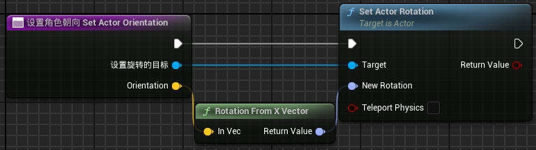功能实现后，给上帝视角wasd控制方式加上“IA-旋转朝向”的输入操作，将值类型设置为Vector2D。然后编辑上帝视角wasd的输入映射情境
有必要陈述一下：
我们给IA-上帝视角wasd旋转朝向设置为Vector2D，在IMC中添加的时候有一点需要注意：
键盘上的方向键和手柄上的右摇杆，
左右是ActionValueY的输出值，右为1，左为-1。这里键盘和手柄一致
上下则不同。作为ActionValueX的输出值，对于键盘来说，上为1，下为-1；手柄则相反，上为-1，下为1。所以我们设置角色旋转按键时，在设置游戏手柄右摇杆Y轴时添加一个否定的修改器。
同时谨记区分，游戏手柄Y轴输出的是ActionValueX，X轴输出的是ActionValueY。
（这里做说明，向上键不加修改器，向下键加一个否定，向右键加一个拌和输入轴值，向左加一个否定加一个拌和，手柄Y轴加一个否定，手柄X轴加一个拌和输入。）
（所以手柄Y轴输出的是ActionValueX。如果向右不加修改器，向上加拌和输入轴值，那么手柄Y轴输出的就是ActionValueY）
（同时区分手柄右摇杆和左摇杆的Y轴输出。他们是相反的。）
然后就可以使用功能。
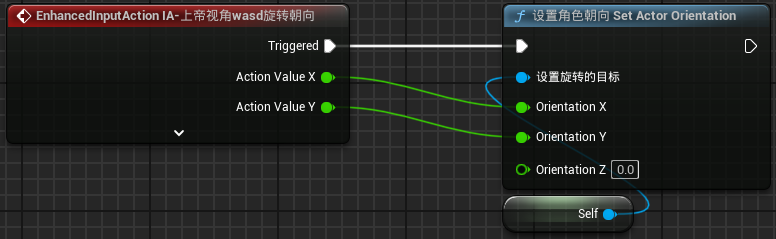完全可以在运动期间可以设置角色朝向。
接下来实现TPS的视角朝向
TPS因为操作的特性：
角色移动是根据摄像机方向进行移动的，并不是根据角色方向
而且TPS并不需要旋转摄像机（移动手柄）的时候就设置朝向
在TPS输入模式下创建IA-TPS转动摄像机，值类型为Vector2D
IMC中设置IA的按键绑定，
选择“鼠标X、Y”，修改器选择盲区
选择“游戏鼠标右摇杆X、Y轴”
无论鼠标还是手柄，Y轴没有修改器，X轴为拌和输入轴值，进行实验
鼠标往上，ActionValueX=1，鼠标往下，ActionValueX=-1，
鼠标往左，ActionValueY=-1，鼠标往右，ActionValueY=1，
手柄往上，ActionValueX=-1，手柄往下，ActionValueX=1，
手柄往左，ActionValueY=-1，手柄往右，ActionValueY=1，
所以要给右摇杆的Y轴加一个否定的修改器
我们要通过鼠标对弹簧臂进行SetWorldRotation。我们不能直接将ActionValue的值赋给SetWorldRotation。因为手柄摇杆回归中心、鼠标从运动到停止的时候，ActionValue的值会变小，也就是会把我们动摇杆期间的赋值又给回去。
（弹簧臂不要勾选继承yaw）
所以我们要把鼠标（右摇杆）的输出值和弹簧臂的GetWorldRotation进行一次累加，并将累加值赋值给SetWorldRotation。
摄像机的WorldRotation是Yaw范围在（-180，180），pitch是（-90，90）内的可能值。所以在累加的时候，pitch有可能会超出90这个范围。所以要对Pitch的值取一个小于某个数的值。
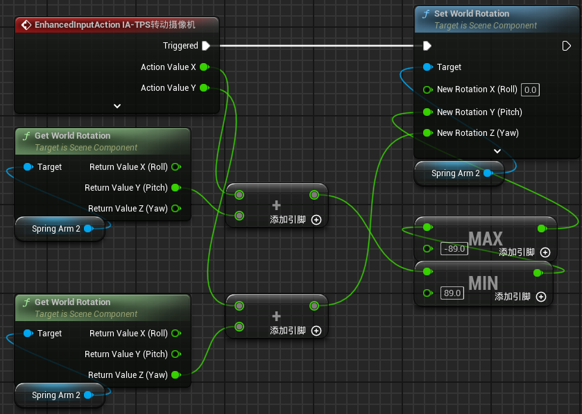成功实现。
接下来重写移动逻辑。原来的移动逻辑就是将wasd的ActionValue进行角色的世界Movement Input。也就是说，现在的移动逻辑，即使你面朝任意一个地方，进行前向移动时都是向着世界的X轴前进。
现在我们要根据摄像机的WorldRotation对角色的移动方向进行设置。
有个严重问题：虽然摄像机看到的世界方向是不变的，但是当Actor转动的时候弹簧臂的GetWorldRotation的yaw值是变的
但是经过相减之后，就得到了我们希望的不变的摄像机WorldRotation
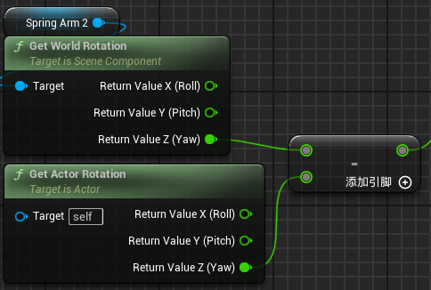我们可以将这个值进行SetActorRotation试验一下
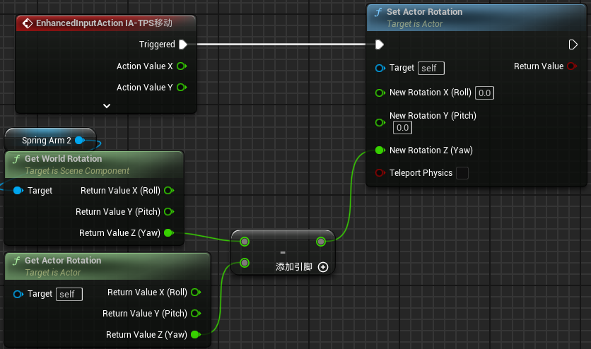我们后面并不会这么用移动。因为第三人称转动摄像机时并不应该SetActorRotation。这里只是一次试验
问题的关键是摄像机的GetWorldRotation是随着Actor的角度而改变的。我们为了获得真正的不变的GetWorldRotation，应该用WorldRotation - ActorRotation。这样得到的就是不变的WorldRotation。
我们可以将它写成一个函数，命名为“第三人称相机不变世界旋转 Third Person Camera Truth World Rotation”
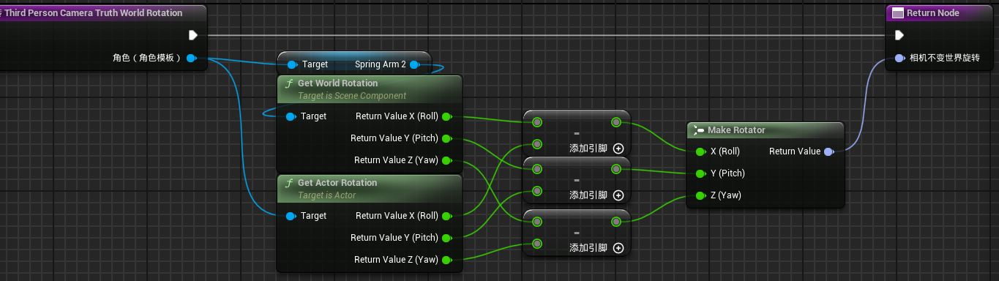然后使用该函数，得到相机的真实世界旋转。
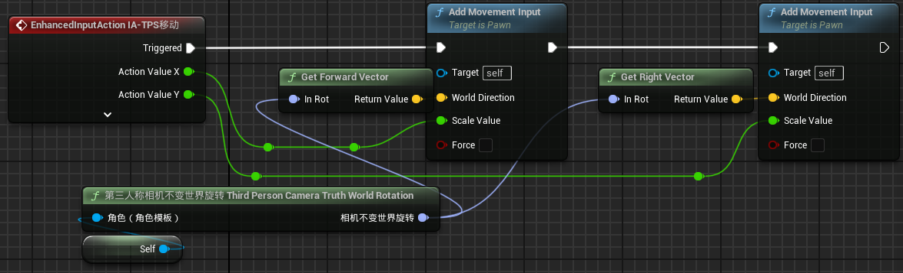我们也可以修改下函数，让这个函数可以更具有普遍性。
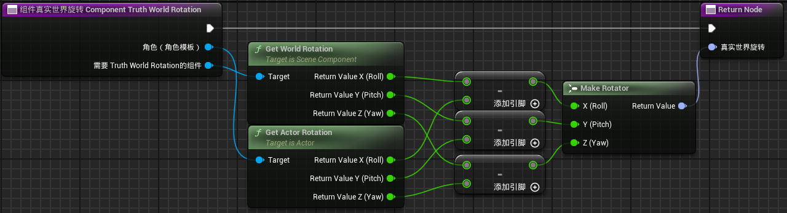 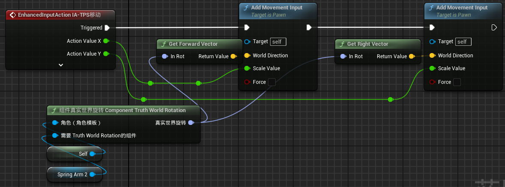同时实现一个功能：在TPS下通过鼠标侧键设置角色朝向
后续的东西，特别是技能的释放等，默认方向为角色朝向（第三人称呢？），主动方向应当SetActorOrientation。一般来说，第三人称下，在移动的时候就通过“将旋转朝向运动”进行角色转向了。
当第三人称下释放技能时，如果需要向相机的方向或其他组件的方向释放技能，则依然需要组件真实世界旋转ComponentTruthWorldRotation函数来SetActorOrientation。所以这种情况下，角色技能的释放方向依然是角色的朝向。p>
后面会用到大量的找到角色状态节点族，所以创建函数实现效果
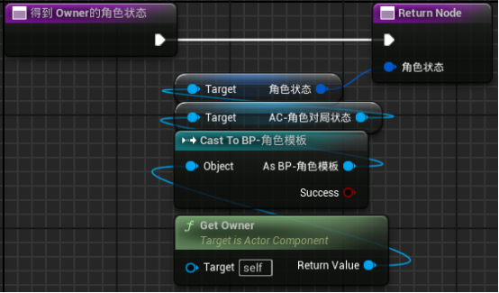普攻：散弹水球
创建Actor类蓝图，在蓝图中添加三个组件：Cascade、Collision、发射物移动组件，将发射物移动组件的默认的重力去掉。
创建两个变量：移动速度和移动距离，可编辑实例、生成时公开。
然后在水球创建的时候完成下图的内容

这样就完成了单个水球的创建
接下来实现散弹水球的效果。将生成速度向量的Yaw进行一个偏移即可。

验证完毕，接下来实现控制输入（手柄的扳机键是0到1的输入）
角色技能默认统一按照角色朝向。因为技能向角色朝向释放，所以除去RTS操作模式，另外两个操作模式的技能释放可以相同。
角色有6个技能（包括普攻）
上帝视角wasd：
右扳机、Space：普攻
左扳机、左Shift：③位移技能
左肩键【：战略技能④
右肩键、】：战略技能⑤
A、Q：①技能
B、E：②技能
创建上述的输入操作和修改输入映射上下文。值类型为bool
（默认不支持扳机键按到一半的情况。如果有的话，电脑玩不了了）
完成上述内容之后，我们会用这些按键来触发使用技能的自定义事件。为了能更方便的管理技能属性（冷却时间等），创建AC-技能组件
首先在AC中实现事件分发器


然后在BP-角色模板的AC的细节中找到创建事件节点。

这里以普通攻击为例，
首先我们希望能够普通攻击。很简单。增强输入的普通攻击按键事件触发后直接调用AC中的自定义事件即可。

触发攻击事件后，会Call普通攻击时，也就是AC的细节中的普通攻击时。创建该事件节点，来实现普通攻击的实际效果。
我们创建普通攻击时事件。我们要在这个事件中实现普通攻击的效果，也就是霰弹水球枪

前摇和后摇由动画系统完成，冷却和耗蓝由AC来完成。
现在释放普通攻击，会发现完全没有间隔。前后摇我们先不做，我们先实现冷却和耗蓝。
假设普通攻击也有冷却和蓝耗。
创建结构，命名为S-技能属性。在里面定义技能的属性。

（冷却期间或某些状态下技能不可用）
（技能当然也有其他属性，比如“是位移技能”“层数”。这类属性没有在图片中展示）
在AC-技能组件中创建6个变量，变量类型都是S-技能属性，可编辑实例、生成时公开.
现在只处理普通攻击，对普通攻击的属性进行设置。
首先对技能进行初始化。因为技能和角色是绑定的，所以在角色的构造函数中进行初始化。

然后在AC中创建函数实现技能是否可用的判断

然后在使用普攻时先判断技能是否可用，如果可用再使用技能，并减少法力值和控制冷却时间。
我们要在技能组件中实现技能释放和技能冷却的处理。

这个东西貌似不能封装成函数。不过也没必要，因为每个技能几乎都是按照这样的流程处理的，而且后面都会继承到。
也就是说，6个技能（甚至于装备的主动技能）我们都要这样处理
下面简单实现普攻验证

完美实现
这样设计的技能框架
英雄技能是每个角色特定的能力，所以可以直接和角色绑定
AC-技能组件中实现6个英雄技能的帧处理。
角色的构造函数中实现自身技能的初始化
在角色的事件图表中实现角色自己技能的效果，方式就是在组件中通过AC-技能组件的事件分发器
使用技能时，在角色蓝图中通过增强输入事件触发AC中的使用技能事件，进而通过事件分发器来真正的使用技能
如果后续重做英雄，需要更新角色的构造函数。
根据角色当前状态进行数值展示
同时完成装备架的UI设计
创建控件蓝图命名为WBP-状态数值UI
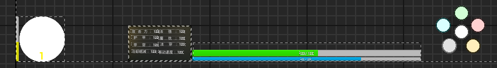 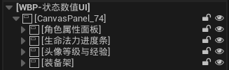 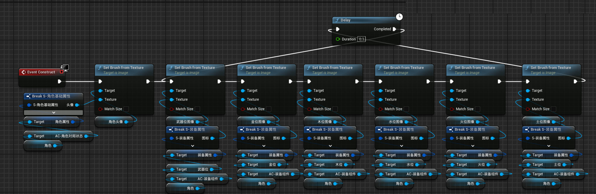在角色蓝图中CreateWidget
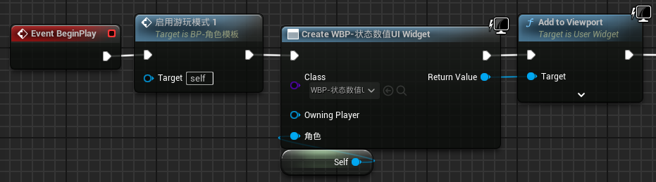很简单
先只实现装备的数值支持
如下设计
装备的父类是Actor类
创建结构，命名为S-装备属性，结构成员和角色属性相似，额外加上int型的花费
在BP-装备模板中创建变量命名为装备属性，类型为S-装备属性（不需要可编辑实例生成时公开）。各个装备的实际属性会在DT中实现。
我们先实现两个装备
在EventBeginPlay时（或者构造函数上）通过DT对装备进行初始化。这些要在父类中完成
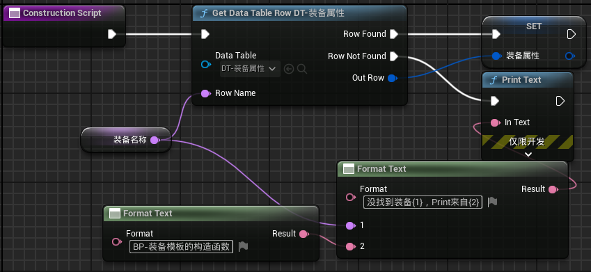这样装备就实现完了
实际上，在前面的WBP-状态数值UI中就已经展示出来了。在那里的设计实际上就是从这里的装备栏设计复制过去的。所以在这里详细补充一下。
我们需要摁TAB键来查看和操作装备，同时在血条的右侧会有装备UI
UI需要构造一个圆形的UI
在WBP的按钮的细节中找到“外观--样式--普通--轮廓设置”设置好圆形盒体之后再设置圆角半径。
也可以通过图像的“外观--笔刷--绘制为”设置为圆形盒体
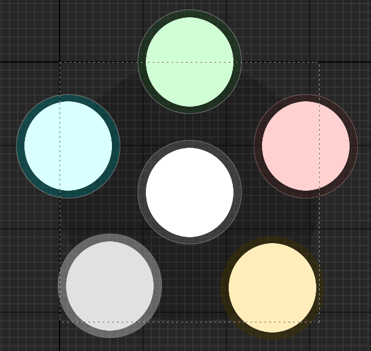 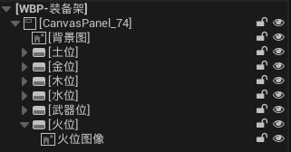然后通过按键开关装备架
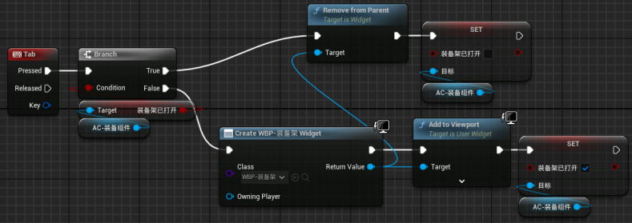现在实现开关装备架的增强输入。因为增强输入时会持续输出，所以增强输入事件要用Completed
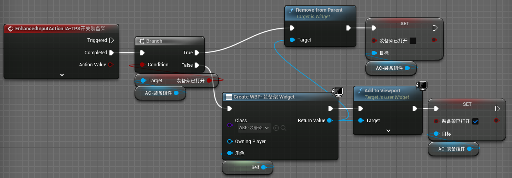一般来说，装备栏只有在：接入装备、剔除装备、刷新层数（如果装备有层数，在BP装备中实现）、使用主动技能（目前没有涉及）时才会需要更新角色属性。而上述情况都是函数。所以我们需要创建一个变量，来表示应当刷新。这个变量在上述情况下进行更新。然后在“是否需要更新角色属性”里创建事件分发器，来表明需要更新角色属性。
换句话说，现在的情况下，我们在开着装备界面的时候是不能看到装备架刷新的，需要重新打开装备界面才能看到。
装备栏管理装备位置
创建AC-装备组件
在组件中创建6个变量，分别是：金位、木位、水位、火位、土位、武器位，变量类型为BP-装备模板，可编辑实例，生成时公开
同时也要在AC中实现一些函数：装备交换位置、接入装备、剔除装备
为实现效果：创建枚举E-装备位置，一共有6个位置
下面首先实现接入装备和剔除装备
应当先判断能否接入和能否剔除
当能接入时，我们会给指定位置接入一个装备，也就是SpawnActor
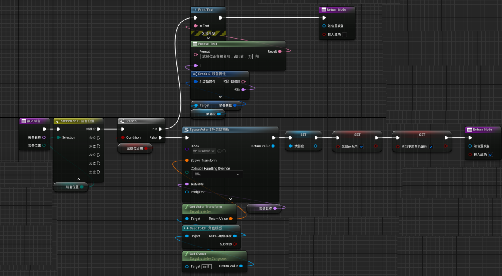这是一部分的示意。实际上应该把所有情况都写全。同时为了让节点族看起来更好看，对这些节点进行折叠。
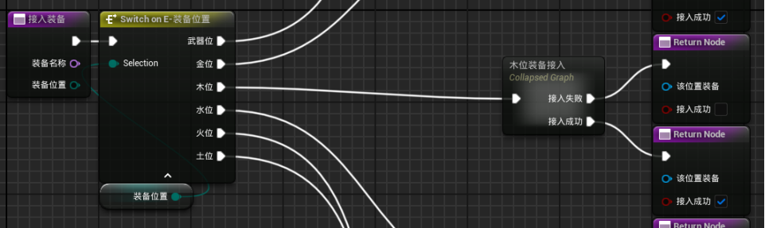进行试验
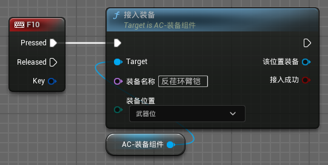成功实现
接下来实现剔除装备
首先判断该位置是否有装备，有则删除Actor并剔除，没有则什么也不做。
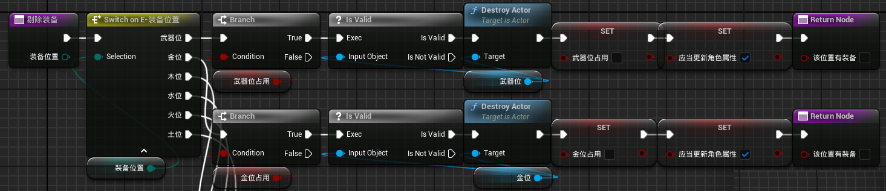 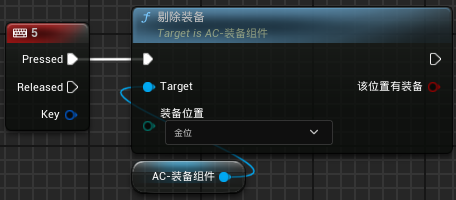接下来我们需要对装备架进行不定期更新。不需要EventTick，我们只需要在Delay之后重复SetBrush就可以了。
为了在每次购买装备或售出装备时进行更新，在AC中创建一个类型为bool的变量表示是否需要更新，在BP-角色中进行（实际上是在AC中实现）根据是否需要更新进行角色属性的更新。
一般来说，只有在接入装备和剔除装备时才需要更新，并在更新完成之后设置为不应当更新角色属性。
当我们更新角色属性时，遍历6个装备的每个属性，进行一定的运算将结果赋值给角色对应属性。
公式为
（新的装备数值总和-旧的装备数值总和）+角色当前属性=角色属性更新结果
下面给出最大生命值的运算函数。
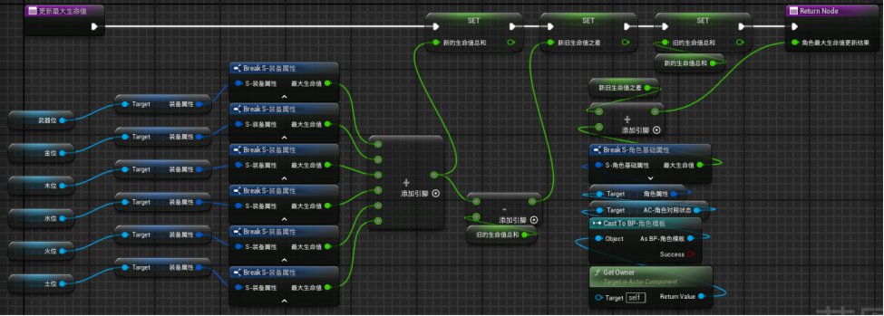 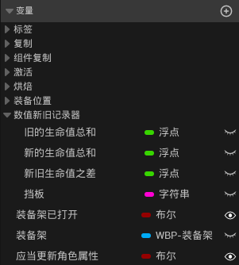这里不能用局部变量。
除了最大生命值，其他的也要完成。可想而知这个东西的工程量。所以我们要尝试通过某种方式，让我们在有一个输入的时候能获得想要的结构中的成员变量。
这里我们在AC中创建函数，命名为“通过命名获得结构中的指定属性”。这里我们只需要处理S-装备属性就可以，所以函数并不需要多大的泛用性。
创建E-装备属性，上述函数的参数为该类型参数，命名为“指定的装备属性”。再创建一个参数，传递想获得的装备的属性。纯函数。
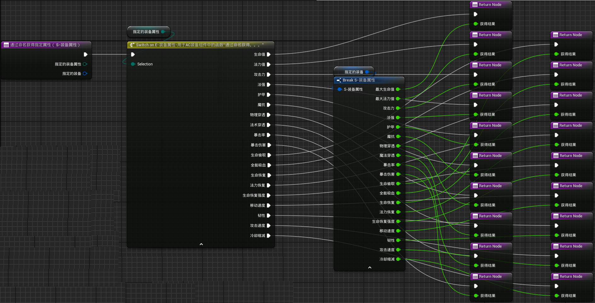同时也要完成根据名称设置指定属性函数
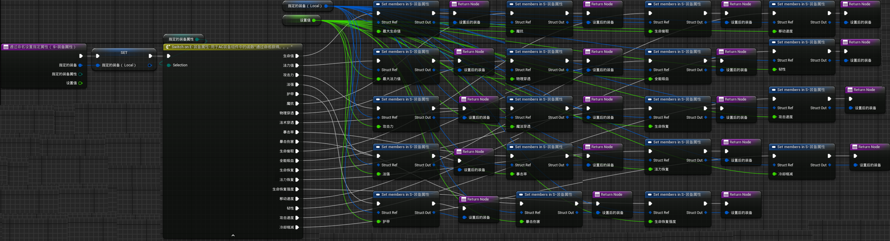这两个函数可以写入函数库
然后实现“更新指定值”函数
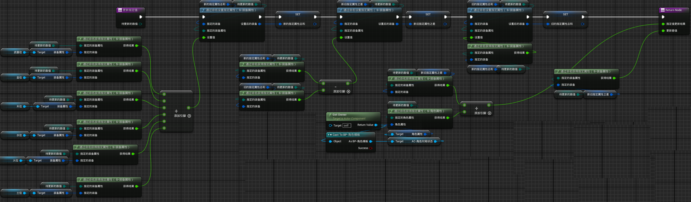接下来改变角色状态。角色状态是根据玩家属性变的，而且UI中显示的数值都是状态值。
要想简单处理，只需要定期设置角色的状态值=属性值就可以。
但是当有debuff时，角色的状态不应该等于属性。
所以简单处理，当角色因装备更新数值时，除了法力值和生命值，直接在这一帧让属性值=状态值
所以在AC中创建的自定义事件不但要设置属性值，也要设置状态值。
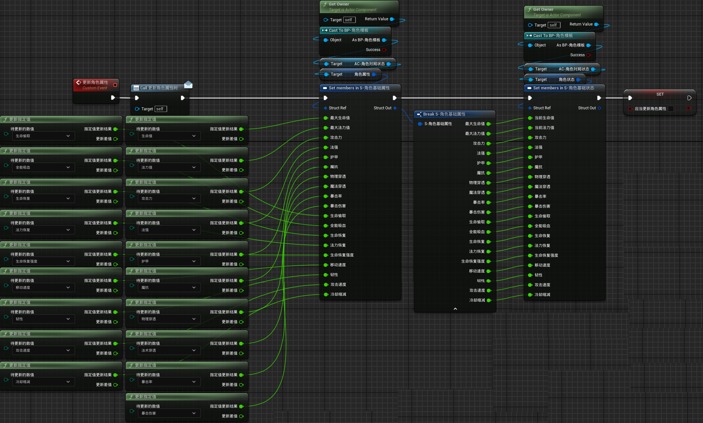然后在游戏中进行验证。在BP角色中实现下面的节点
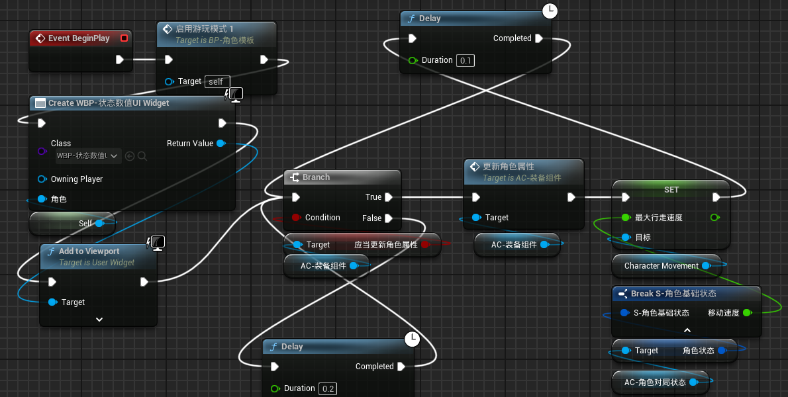实际上，角色状态更新的操作不应当和装备进行绑定。当有buff时，也应当定期更新角色状态。
这里要区分更新角色属性和更新角色状态
所有的角色有一个角色总类
角色总类继承两个基本完全相同的子类：角色模板、敌人模板
敌人模板是由角色模板复制粘贴形成，相对于角色模板删除一些东西。
这样做是为了尝试创建真正的英雄，而不是角色模板。
同时将角色对局状态组件等组件给到角色总类中，由子类中使用
注意：子类有些事件需要继承自父类。这时事件的Parent节点应当启动。
实现一下定期回血回蓝
先无视生命恢复强度这一属性
角色有生命恢复、法力恢复这两个属性
他们也被初始化完成了。我们只需要在角色的EventBeginPlay时SetTimerByEvent即可
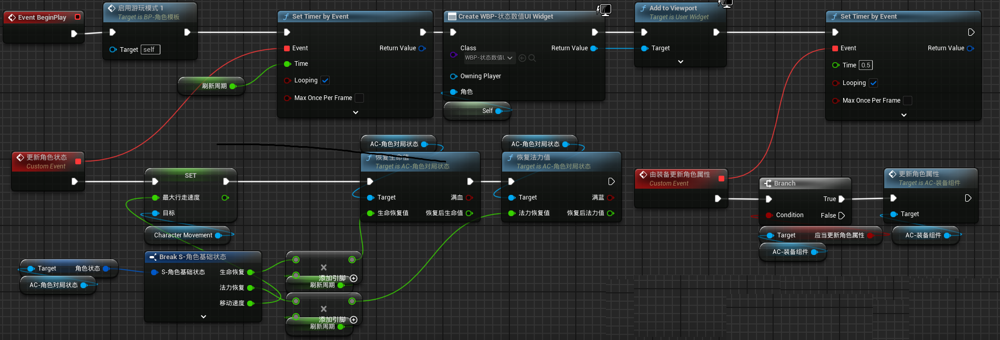也可以通过定期事件处理角色自身的“更新角色状态”，用于buff部分。
想要创建环形生命值条，命名为WBP-环形状态条，来表示角色的三值的百分比
目前不知道怎么实现类似时钟样式的角度表示百分比，所以用从下到上表示百分比
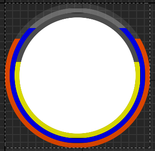 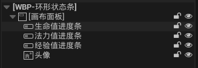图像效果是简单的遮盖，头像是变量。
出于优化角度，进度条使用绑定进行更新，使用定时器进行更新。同时用定时器定时更新头像（不定时更新头像，头像无法合理初始化，原因未知。这是一个优化点）
环形状态条需要一个“BP-角色模板”型变量“角色”来对数值进行绑定。
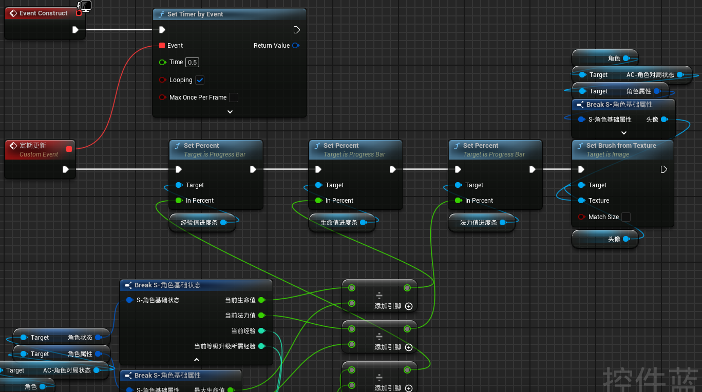在WBP-状态数值UI中，添加WBP-环形状态条，设置为是变量。在图表中进行初始化。
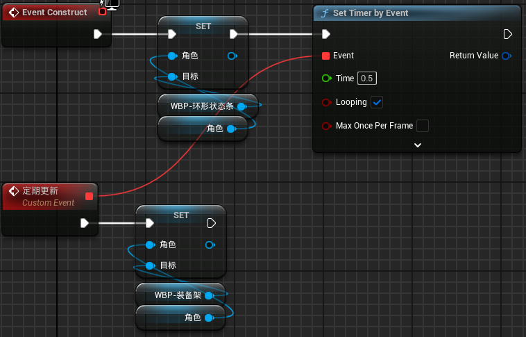（装备架是在WBP-状态数值UI中添加的UI组件，按照整体将WBP-装备架添加进状态数值UI。这样可以只用一个节点和定时器节点就对装备架进行定期更新）
创建英雄，命名为壁
需要对英雄的构造函数重写
实现技能效果：
普攻：发射一个大的水球
①技能：水散弹
②技能：增加攻击力、移动速度，恢复生命值（buff类）
③技能：向目标方向移动一段距离
④技能：向前方喷射水柱
⑤技能：流星水雨
对角色创建的水球重写
因为我们需要导入角色的属性，所以创建变量命名为创建者，类型为BP角色模板，可编辑实例、生成时公开。在角色技能SpawnActor时需要将角色自己传参。
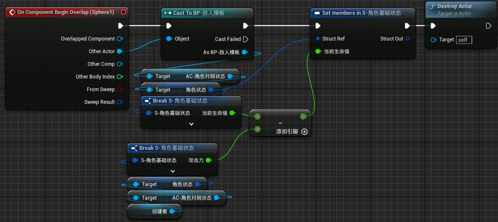在技能里，有buff类效果。这里因为还没构建好buff框架，所以只需简单实现技能效果。
按照后期构想，先不做buff框架了
当角色现需要一次释放许多火球，并在之后销毁他们时，如果真的生成并销毁，那对cpu的开销将是巨大的。
所以我们使用对象池模式，在游戏一开始的时候就创建这些对象，只是是否使用他们的时候对他们的“是正在使用”属性进行修改。这样可以极大地减少cpu的开销，不过会增大内存的开销。
现在我们对角色的部分技能进行修改。
角色的一技能是释放一个扇形的区域的水球散弹。四技能是水球激光，五技能是水雨。我们实现技能是通过SpawnActor来实现的，水球技能是生成BP_水球，水雨技能是生成BP_水雨。
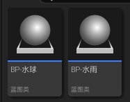所以我们先关注水球技能。
按照PooledActor要求，应该首先修改BP-水球，添加一个bool型变量，命名为“正在使用”。
但是我们实现通用性效果，不在BP-水球上修改，创建BP-池对象。
添加一个bool型变量，命名为“正在使用”。添加float型变量，命名为存活时间
同时给他创建一个函数（或者自定义事件），命名为“设置变量-正在使用”，添加bool型形参InUse，对正在使用变量进行赋值。然后，如果他被使用，我们就启用碰撞，否则就禁用他。如果没有使用，我们也会隐藏它，或者以其他方式展示它。也有许多其他内容，具体见图片。
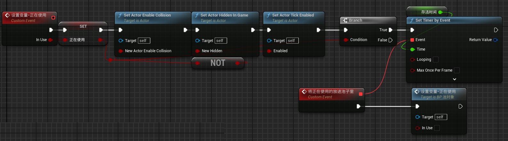同时我们也要将计时器提升为变量，在我们创建一个新的之前，清除它并使其无效。
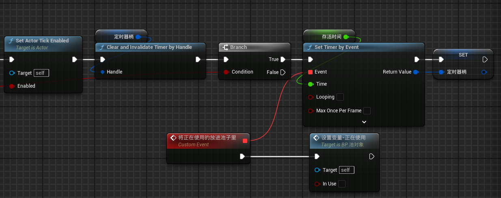同时在EventBeginPlay时调用该自定义事件，确保任何Actor都是从不被使用开始的。
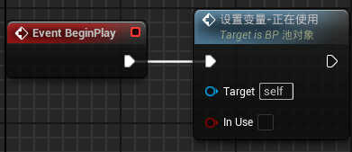同时为实现更强的通用性，我们设计：所有发射物都是BP_池对象的子类。在BP_池对象中创建可能用到的变量，比如：创建者。而且还要可编辑实例、生成时公开。
上面是实现了PooledActor，也就是对象池里面的对象。接下来实现对象池。我们通过ActorComponent实现ActorPool
创建AC_对象池，添加变量PooledActorClass，类型选择为BP-池对象的类引用，仅勾选可编辑实例。
添加变量“池大小”，int型，可编辑实例。
添加变量PooledActor，类型选择为BP_水球的对象引用的数组。
接下来实现ActorPool的功能
首先是初始化池
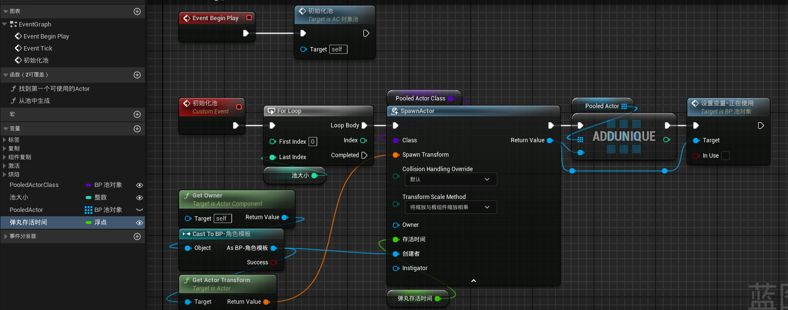然后实现两个函数帮助我们在池中检索参与者
创建函数，命名为“找到第一个可使用的Actor”，返回值为PooledActor，类型为BP_池对象的对象引用。
创建函数，命名为“从池中生成”。这个函数负责将参与者设置为正在使用。函数的输入为Transform（变换）类型的形参，返回值为PooledActor，类型为BP_池对象的对象引用。
下面就来实现这些函数。
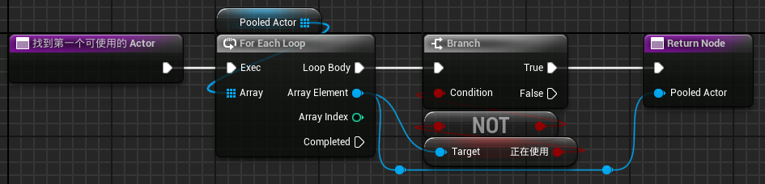 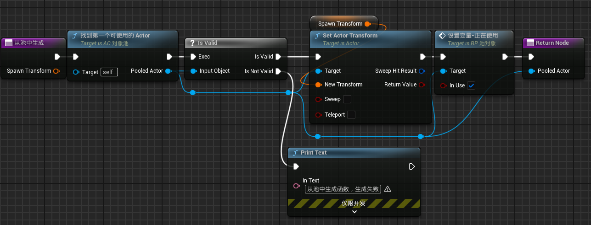接下来对BP_水球进行设置
首先修改水球的父类为BP_池对象。
这之后需要对水球进行较多的修改。
将水球的存活时间（来自父类的变量）设置为移动距离/移动速度
在DestroyActor时不destroy，而是设置“正在使用”变量
然后是设置速度。设置速度不应该在水球的EventBeginPlay时设置。因为当Actor在池中生成时，开始游戏就会被调用。相反，我们希望它在Actor正在使用时应用。
重载函数，选择“设置变量-正在使用”
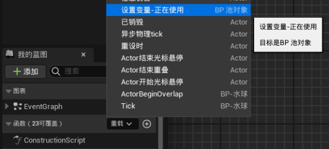 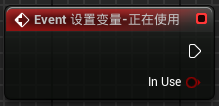我们希望在父类函数的基础上SetVelocity，右键事件节点，选择
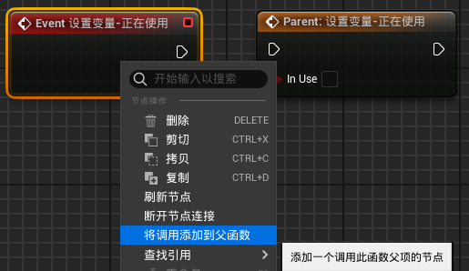 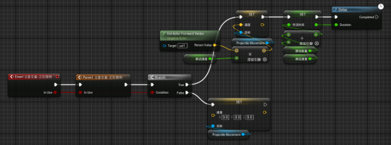同时在InUse的不同情况下时设置粒子系统的开关
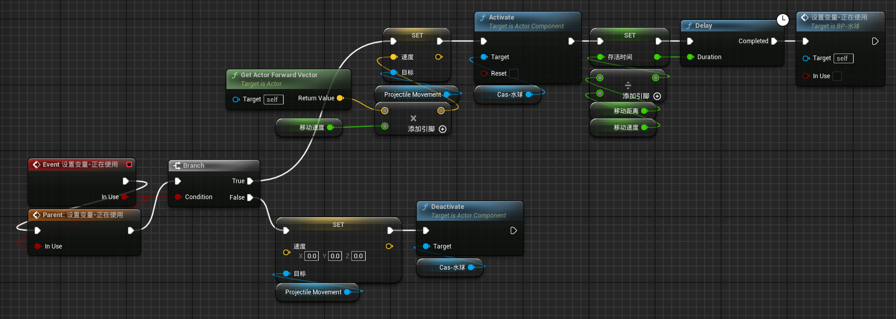现在需要回顾壁的技能。它的一技能是放一个散弹，需要ForLoop来SpawnActor。
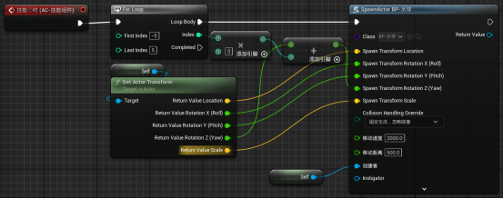现在我们用AC_对象池组件来实现它。添加这个组件，在细节中找到默认，会有组件中的可编辑实例的变量。
然后我们就可以用组件来替换SpawnActor
这里给一技能进行替换。
水球的伤害目前的计算公式为“伤害=发起人攻击力”
因为在初始化池的时候给创建者赋值了，所以这里的水球能完美的接收到父类成员的赋值。
接下来也要给其他的技能进行修改。修改的比较多，这里不做展示
因为有丰富的动画内容，所以用混合空间2D来完成
混合空间的水平坐标为“移动方向”，范围是-180到180
垂直坐标为速度，范围是0到1000
根据这些资产进行混合空间的设置。注意，-180°和180°时是向后走
https://blog.csdn.net/u013412391/article/details/106968940
回到动画蓝图
如果有问题可以给Try的返回值一个CastTo
这样行走动作就完成了
接下来需要我们实现
角色死亡。
很简单，在角色总类中判断当前生命值是否小于等于0，为0，则播放死亡动画并DestroyActor
子类中为了继承该事件，不能删除ParentTick节点
创建死亡动画蒙太奇，之后创建动画蓝图，将角色的动画模式设置为使用动画蓝图。
若想播放死亡动画，一定会打断原有动画蓝图。所以要使用插槽